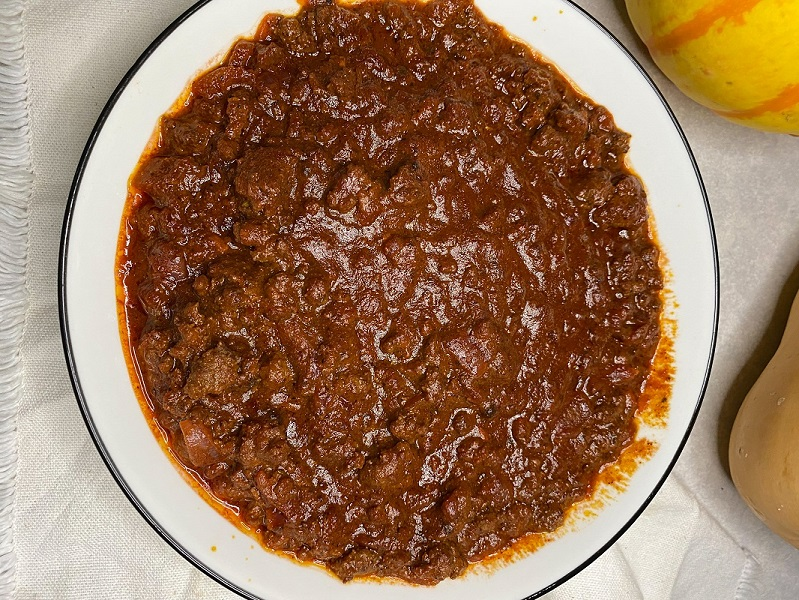

home
Preston's Famous Spicy Chili

Chili with NO beans and NO tomatoes. Just flavor!
This recipe is an alteration of a recipe my Grandfather used to cook. He loved food and was an amazing cook.
Most of the alterations I have made are to make it extra spicy! Feel free to leave those out if you don't like flavor!!!
Ingredients
- 2 pounds ground beef (Alternatives: 1 pound ground beef and 1 pound ground deer or 1 and 1/2 pounds of ground beef and 1/2 pound of ground sausage)
- 2 cups chicken broth (Alternative: 1 cup chicken broth 1 cup beer)
- 1/4th cup flour
- 1/4th cup Pendry's Chili Powder
- 2 teaspoon Pendry's Cumin
- 1 teaspoon salt
- 1/4th teaspoon black pepper
- 1/2 teaspoon smoked paprika
- Add these ingredients to kick up the flavor and the spice!
- 1/2 teaspoon ground chipotle peppers (prefer Pendry's)
- 1/2 teaspoon ground habanero (prefer Pendry's)
Steps
- Brown Meat on medium heat
- Add all of your spices and mix well
- Take off burner add 2 cups chicken broth
- Add 1/4th cup flour and mix well
- Put back on burner and let simmer uncovered until you get the consistency you want